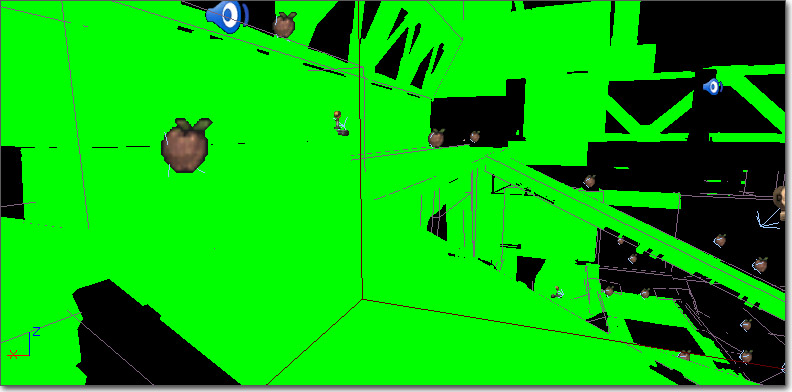

UDN
Search public documentation:
GPUProfilingHomeCH
English Translation
日本語訳
한국어
Interested in the Unreal Engine?
Visit the Unreal Technology site.
Looking for jobs and company info?
Check out the Epic games site.
Questions about support via UDN?
Contact the UDN Staff
日本語訳
한국어
Interested in the Unreal Engine?
Visit the Unreal Technology site.
Looking for jobs and company info?
Check out the Epic games site.
Questions about support via UDN?
Contact the UDN Staff
GPU性能和分析
概述
像素着色
Overdraw(过度描画)
对于GPU性能来说，透明材质可能是个巨大的问题，因为多个半透明材质会产生重叠或过度描画。一般，您应该总是限制任何半透明材质所占据的屏幕空间量，尤其是当多个半透明材质正在重叠时。 粒子系统在这方面会带来巨大的性能消耗。粒子所使用的材质通常是半透明的，并且任何系统上可以描画很多材质，所以有大量的过度描画的可能。以下列出了限制粒子过度描画的一些技巧：- 使用较少的复杂粒子 - 使粒子系统使用较少的复杂粒子而不是使用大量的简单粒子可以获得更好的性能。如果一个由大量粒子构成的特效可以通过在材质中创建特效然后把该材质应用到一个单独的例子上来实现，那么最好使用后者方法。
- Limit Screenspace Coverage(限制屏幕空间覆盖) - 如果您可以限制任何粒子特效所占的屏幕空间量，那么就可以限制该特效的过度描画所带来的性能影响。
- Limit Overlapping of Effects(限制特效的重叠) - 多个特效的重叠会扩大任何单独特效的过度描画所带来的性能消耗。如果可能，请检测判断什么时候需要在同一位置产生多个特效，然后使用一个单独的特效替换它。
不透明蒙板
蒙版材质可能是浪费GPU性能的源泉之一，因为无论几何体表面的每个像素是否可见都必须对其进行计算。要想最小化蒙版材质的性能消耗，可以进行几个优化处理。- Match Geometry to Visible Material Area(匹配几何体到可见材质区域) - 给网格物体添加额外的细节使它和应用到其上的材质的可见区域尽可能匹配比使用具有许多浪费性能的像素的简单几何体更加高效。
- Remove Specular(删除高光) - 除非完全必要，否而蒙版材质应该删除任何高光组件，以便使得浪费的像素的计算尽可能的简单。
- Use Non-Directional Lighting(使用非定向光照) - 使用非定向光照可以减少计算浪费像素的光照所需指令，从而获得更快的性能。
动态光照
动态阴影
SHOW DYNAMICSHADOWS 命令来切换动态阴影的开关状态。最好给这个命令绑定一个按键，以便当按下按键时关闭动态阴影，释放按键时打开启用动态阴影。按键绑定可以通过在控制台中输入以下命令完成 - 比如： SETBIND F SHOW DYNAMICSHADOWS | ONRELEASE SHOW DYNAMICSHADOWS 。
对于在UnrealScript中创建的Actors，我们使用ShadowParenting。这意味着一个actor可以有很多附加物但是只能有投射一个动态阴影。当您有一个具有武器、头盔、背包和一些其它附加物的Pawn时，您想把所有这些”附加物“的阴影投射到父项pawn本身上。您可以通过以下操作完成： Attachment.SetShadowParent(Parent.Mesh)
动态阴影的性能限制
阴影缓冲的GPU性能消耗直接和阴影椎体的屏幕空间尺寸成比例关系。这意味着使用阴影缓冲的附近角色的性能消耗要比较远的角色高。这也意味着投射动态阴影缓冲的较大的对象要比较小的对象的性能消耗高。请参照 阴影缓冲过滤选项页面获得详细信息。 同时，请参照阴影参考指南页面和调制阴影页面获得关于阴影优化的更多信息。视图模式
着色器复杂度
着色器复杂度视图模式基于对每个像素着色所需要的像素着色器指令的数量来描画场景。红色意味着性能消耗非常高，绿色意味着性能消耗最低。注意，半透明光束增加了它们后面的性能消耗较低的不透明材质的性能消耗。 关于该视图模式的完整介绍，请参照视图模式页面的着色器复杂度部分。
#光照复杂度
关于该视图模式的完整介绍，请参照视图模式页面的着色器复杂度部分。
#光照复杂度
光照复杂度
光照复杂度视图模式基于影响表面的动态光源的数量来对场景进行着色。黑色意味着没有收到动态光源影响。各种不同颜色，从绿到红，表示受到动态光源的影响逐步增加。我们的最终目标是使得整个关卡都显示为黑色，尽管这显然是不可能实现的。
关于该视图模式的完整介绍，请参照视图模式页面的 光照复杂度部分。细节模式